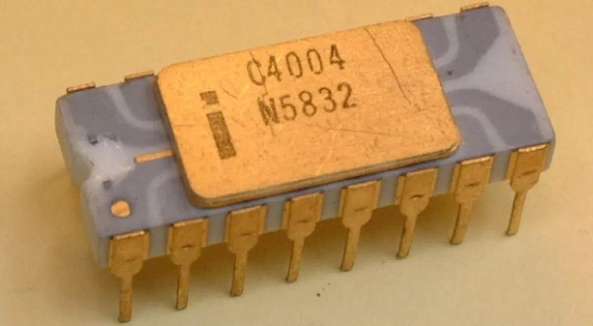

A quarta geração de computadores teve início em 1971, quando a Intel lançou o primeiro microprocessador, o Intel 4004,criado por Federico Faggin, Ted Hoff e Stanley Mazor, primeiro microprocessador comercial. Muito mais potente que os circuitos SSI e MSI de até então, e só terminou em 1981 com o lançamento dos circuitos ULSI (Circuitos de Escala Ultra Grande).
Com o prosseguimento do projeto de miniaturização surgiram os Circuitos Integrados LSI (Circuitos de Larga Escala), com mil transistores por chip e os VLSI Technology (circuitos de larguíssima escala), com 100 mil transistores por chip, e esses novos circuitos passaram a ser chamados de microprocessadores.
Os computadores diminuíram de tamanho com o uso desses chips e passaram a ser chamados de microcomputadores.
O aumento da velocidade nos processadores possibilitou a execução de um número cada vez maior de tarefas ao mesmo tempo.
Porém, um dos principais avanços dessa época foi o surgimento da teleinformática, caracterizada pela transmissão de dados entre computadores por meio de uma rede.
De 1969 a 1972 foi criada a Arpanet, que deu inicio a Internet (teleinformática) que conhecemos hoje. A rede entrou no ar em dezembro de 1969, inicialmente com apenas 4 nós (sediados em Stanford Research Institute, na Universidade da Califórnia, na Universidade de Santa Barbara e na Universidade de Utah, todos nos Estados Unidos). Eles eram interligados através de links de 50 kbps, criados usando linhas telefônicas dedicadas, adaptadas para o uso de transmissão de dados.
A Ethernet surgiu entre 1972 e 1973, dentro do PARC (o laboratório de desenvolvimento da Xerox, em Palo Alto, Estados Unidos), onde foi feito o primeiro teste de transmissão de dados usando esse padrão.
Em 1974 surgiu o TCP/IP, que acabou se tornando o protocolo definitivo para uso na ARPANET e mais tarde na Internet.
Por conta dessa compactação os computadores começaram a ficar menores e mais rápidoschegando à velocidade de 1.000.000 de operações por segundo (nanossegundos)